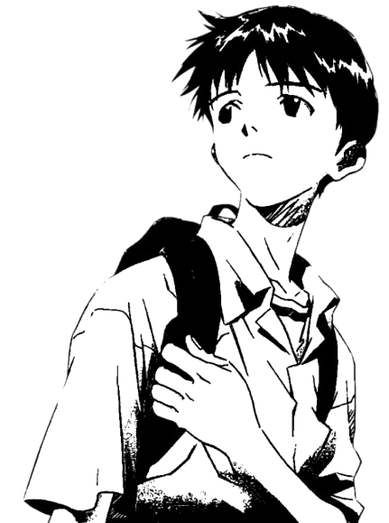

Welcome to Meowbyte
Hallo! I'm Finch, a 21-year-old developer based in ########## . I have 5 different A-identities: Aromantic, Asexual, Agender, Autistic, and ADHD. I love cats, video games, learning, programming, and all things computer science.
This site is a fun side project where I share my thoughts, projects, and random musings while practicing my web dev skills. Feel free to poke around and discover some hidden surprises and silly things.
I'm trying to limit my reliance on javascript; I encourage anyone to poke around and help me figure out ways to use less.
Mobile only zone:
This site was made and designed for computers but I've hacked together mobile support for the basics. I don't know how much content is inaccessible though. I tried.
P.S. The kitty cat icon opens the navigation menu. I hid it to not clutter your screen.